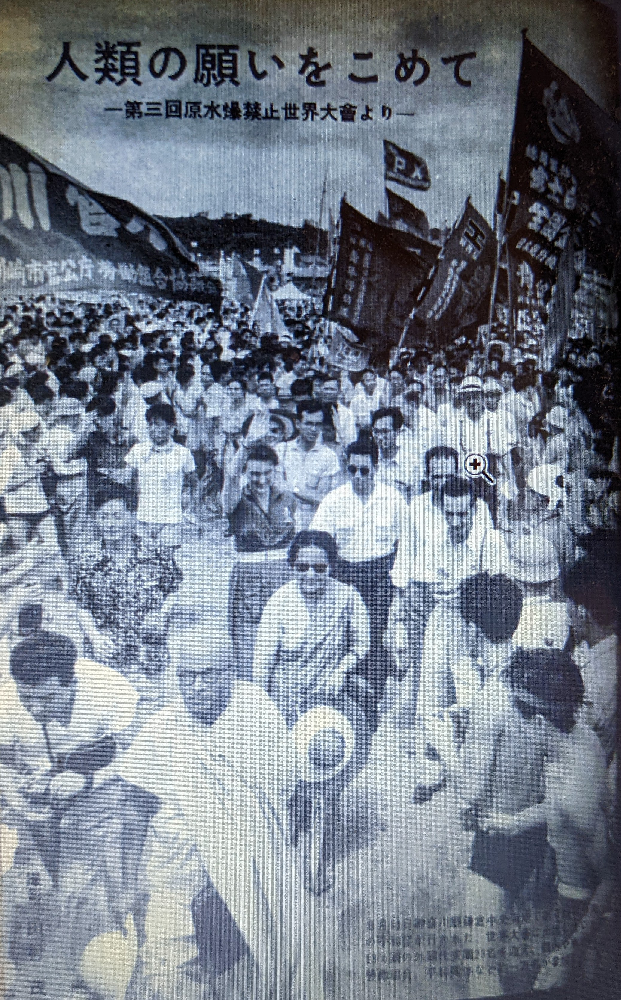

『米軍立川基地拡張反対運動の再検討』第二章
高原太一さんの『米軍立川基地拡張反対運動の再検討――「流血の砂川」から多面体の歴史像へ――』（2022年、東京外国語大学大学院博士論文）については、これまで二回、紹介してきました。
今回は、同論文の第二章の内容をまとめてみます。
従来の「砂川闘争」研究とは異なる立場、あるいは先行研究に欠けていた視点から、高原さんは地元農民に内在的な「絶対反対」の論理を探求しました。その一方で、外部支援者、特に知識人にとって、砂川との出会いや経験がどのようなものであったかについても、深い洞察を示しています。
第二章では、歴史教育家だった高橋磌一（ﾀｶﾊｼ ｼﾝｲﾁ）、第三章では地元の知識人たる「基地の教師」たちが対象です。それぞれにおいて、従来の歴史研究では重視されなかったルポルタージュや講演・座談記録、会報や文集などを含む史料群が丹念に読み込まれています。
民衆史研究者である安丸良夫の用語に依拠して、「生活者についての専門家」である地元の当事者（農民・住民）と「意味づけについての専門家」である外部支援者（知識人）とを関連づけ、両者の間の往還に注目する高原さんの分析は、まさに彼自身が述べているように、「民衆運動研究・民衆精神史研究に新しい可能性を示すものではないか」と思われます。
以下、高原太一『米軍立川基地拡張反対運動の再検討』の第二章で参照・引用された主な文献に即して、高橋磌一の「砂川問題」についての論考をまとめてみます。
第二章 介入：「基地問題文化人懇談会」高橋磌一の「砂川問題」
「ルポルタージュ 九月十三日の砂川」
高橋磌一（1913-1985）は、「戦前から戦後と中学校の教壇に立ち、退職後も長年歴史教育運動をけん引した」教育者である。彼が初めて砂川を訪れたのは、反対同盟が結成され抵抗運動が始まってから約４ヶ月後の1955年9月13日だった。五日市街道上に測量調査用の杭が打ち込まれ、地元リーダーである青木市五郎が「土地に杭は打たれても、心に杭は打たれない」という言葉を発する日である。
その日に高橋は、雑誌『世界』の特派員として「砂川闘争」の現場を取材し、同誌にルポルタージュを発表し、以後20年以上にわたって「砂川問題」と向き合う。その「ルポルタージュ 九月十三日の砂川」には、前夜から立川の宿に泊まりこんだが興奮と騒音のせいで眠れなかった様子が記されているという。各社の報道陣やニュース映画班等でごったがえし、大型機の騒音や軍用トラックの振動という基地の町ならではの喧騒もあったのである。
翌朝まだうす暗い5時頃に砂川に入った高橋は、寝不足ながら「頭だけが妙にさえて」いた。そんな高橋の緊張をよそに、タオル鉢巻の農夫が赤旗をかついで笑っていた。午前6時半過ぎ、「キタヨー」というかけ声とともに始まった「衝突」の一日のなかでも、最前線の警官隊と労組員の間でさえ、時には笑い合い、言葉をかわしてタバコの火を分ける光景もみられた。支援の大学生も、向かい合う警官とニコニコ話している。砂川の消防団が消防自動車をくり出して、警官隊が行動を起こそうとするとサイレンを鳴らして抵抗した。その頃の砂川は、まさに「町ぐるみ闘争体制」であり、高橋磌一が仔細に観察し記録しようとした地元民たちには、「どこにも暗い影がない」のだった。
その一方で、「高橋のルポに特徴的なのは、地元側ではない人々の姿を、表情にいたるまで克明に記している点である」と、高原は指摘する。警官一人一人の様子も描写されているが、同時代の他の記録では、黙々と“作業”する没個性的な警官隊や、時として暴力的で卑劣な個々の警官が「悪者扱い」されがちだったのに対し、高橋磌一は、「固く不動の姿勢」をとりながら、何かをこらえるようにして目に涙をためていた一人の警官に注目した。
そして、その日の帰りの車中で、「歴史家として、歴史教育者としてお前は砂川の問題にどうこたえるのか」という問いを反復していたという。その後、新たな出会いや出来事にたじろぎながら、高橋はこのような自問自答をくりかえして思索を深める。
『歴史教育論』（1956）
1955年9月25日の「歴史教育者協議会第七回大会」で高橋磌一は、9月13日の砂川経験を、「眼と耳で直接学んだ現代史のある場面」として語った。その具体例のひとつが「若い警官の涙」であり、高原によればそれは、現代史の複雑さと矛盾を象徴するものとして捉えられていた。高橋磌一は、敗戦後の10年間、歴史学は戦前の歴史学に対抗して科学的な歴史を求めるなかで、そのような「複雑さ」を見過ごしてきたのではないか、それで歴史家／歴史教育家は「現代史の問題」に向き合うことができるだろうか、と問いかけたのだ。
高橋が現代史をとりあげるのも、歴史をできあいのものとして受け取るのではなく、「自分の皮膚にふれるところに引き寄せて考えるというところに意味」を見出すからだった。現代を生きる一人一人が主体的に捉え返していかなければならない、という「歴史意識の変容と転回」を求めたのである。
そのような高橋磌一の呼びかけについて、高原は「1960年代以降に本格化する民衆史研究、あるいは民衆精神史研究と呼ばれる歴史学の潮流を先取りした問題意識」だと評価する。高橋磌一自身は「歴史をつくっている民衆の中でも自分は教師なのだという教師の問題としての討論がいったい十分であったかどうかという問題にいきあたる」とも述べていた。そのような自覚を基盤として、「砂川問題」にとり組むにあたっても問題を「現代史」のなかで考えていくという方法を提起したものといえる。
自らの砂川経験を主体的にとらえ返し「現代史の複雑さ」を自分の肌で受けとめた高橋磌一は、歴史教師としての自覚を深めながら、砂川の「現場」と「問題」に介入していくことになる。その過程で、一層の複雑さを経験してたじろぐことにもなった。
「座談会 基地砂川の教育」『歴史・地理教育』（1955）
そのような経験として高原があげるのが、砂川の現場教師との関わりであり実践である。前述の「歴史教育者協議会第七回大会」から約１ヶ月後の1955年10月31日、高橋磌一は、再び砂川を訪れた。「基地砂川の教育」と題する座談会が開かれ、高橋はその司会を務めたのである。『歴史・地理教育』1955年12月号に収載されたこの座談会の趣旨は、同誌編集部によると、「地元砂川の緊迫した空気の中で、どうすれば、子供に正しい教育をすることができるだろうかと日夜心をくだかれている砂川中学の先生方に集まっていただく」というものだった。
座談会に出席した現役教師は、地元の砂川中学校から4人、近隣の小学校２校から１人ずつ、そして砂川の基地を視察に来ていた長野の小学校から1人、合計８人だった。司会の高橋磌一は会の冒頭で、「砂川町の問題は、砂川町だけの問題ではなく……全国の人が考えている。子どもに質問された時、どう答えればよいか。そしてそれこそが現代史の問題で、これを避けて通れない」と述べた。
「砂川の問題」とは何なのか。この座談会で参加者が最も多く口にしたのが「問題」という言葉だったが、それが何を指し示していたのかは「各個人の間でズレがあった」、と高原は指摘する。
町で唯一の中学校である砂川中学校は、「拡張問題」以前に騒音をはじめとする「基地問題」に悩まされていた。原則として拡張計画には誰しも反対だった。しかし、反対運動に参加するかどうかについては、意見が分かれた。砂川町議会も、1955年9月13日の「衝突」直後に分裂し、早くも「町ぐるみ闘争体制」が崩壊していたのである。町内では「絶対反対派」と「条件派」の対立が激化し、学校現場でも生徒間や教師内部で対立をかかえるなど、影響が現れた。
10月31日の座談会に出席した砂川中学校教師はサークル活動参加者だったが、「条件派」のPTA幹部と近い関係にあった校長は、「中立」を掲げながらサークル教師たちの動きを封じ込めようとしたという〔サークル活動については次章で説明を加える〕。そのような緊張や対立関係をいかに緩和・解決するか、ということが砂川教師たちの「問題」だったのである。
とりわけ高橋が関心を寄せたのが「教師自身の問題」だったという。他の参加者の発言にもふれながら、高橋は「校長は権力機構の末端である、と言い切ってしまうのではなく、校長もまた変わり得るものだということでないと職場は前進しないのじゃないか」と問いかけた。そして高橋が続けて語ったのが、先述のルポでは記されていなかった別の警官の姿だった。あの日、9月13日の昼、労組員たちと向かい合って昼食を食べていた警官が「この世の中でこんな悲惨な人があるかしらと思うような表情をして、ぼそぼそと砂をかむような表情で弁当を食べていた」のだという。高橋は「あの警官を敵だと言ってしまって、砂川の問題がかたづくのかどうか」と問う。それに対して砂川中の教師が「ぼくらもみんなの力が大切だから、みんなのできる線でやろうと考えているんだけど、なかなか実現できない」と応じた。「理論家」である高橋磌一は、この座談会の間一貫して「敵」をも切り捨てない包括的な姿勢を打ち出していた。
両者の間に「微妙な距離が生まれていた」と高原は指摘して、以下のような考察を加えている。
…基地闘争のような自分たちの力を遥かに凌駕する問題の前で、かつ緊張が
日常化していく状況下で、教師は何が出来るのか。その問いは、戦前の
軍国主義教育の時代から戦後の民主化、そして逆コースの奔流のなかで教壇に
立ち、そして最終的には教壇を追われた高橋にとっても、身に覚えのある
「問題」だったのではないか。高橋が、「その悩みは、私たちの悩みでもある
のだし」、「危なさはぼくたちの危なさに通じている」と述べたとき
「砂川問題」は砂川の教師たちだけの「問題」ではなかった。それは
「私たち」の問題であり、すなわち「現代史」の問題なのである。
「砂川＝私は見た ３ 闘いの記録」『世界』（1956）
先述のように「町ぐるみ」の運動が崩壊するにつれ、「町民総蹶起大会」の参加者も地元民よりは外部支援者の方が多数になっていった。反対同盟は積極的に他の集会や集団に呼びかけ、それに呼応して高橋磌一や清水幾太郎らの文化人グループも、運動支援の名乗りを上げた。彼らは1955年12月17日と翌1956年1月10日に、それぞれ約70人規模で砂川を訪れ、1月27日には「基地問題文化人懇談会」としての第一回会合をもった。彼らの言論活動により「砂川問題」は、大きな政治・社会問題として認知され世間を揺るがした。
そして1956年10月、強制測量による負傷者1000人以上にのぼる「流血の砂川」という事態に至り、高橋磌一は現代史の新しい「問題」と新しい「人々の表情」と新しい「現場」を見つけることになる。
なかでも高原の言う「高橋の砂川経験のなかでも最大といえる「事件」」は、高橋磌一ら文化人と地元の人々との懇談の場で起こった。なかなか打ち解け合えないでいるときに、当初から支援に参加していた日本山妙法寺の僧が「文化人などというが、基地反対に戦っている農民がほんとうの文化人じゃ！」と言い放って、場を明るくしたという。
他の文化人参加者とは異なり、この「事件」にたじろぎ衝撃を受けた高橋磌一は、自分の「座り心地の悪さ」と向き合うことになる。その後に書いた文章では、地元民が「文化人」「知識人」に対して「買いかぶりもしなければ、その果たす役割を見落としもしない」ことを記していた。そこに注目した高原は、高橋磌一が、客観的な観察者にとどまらず、現場の状況に巻き込まれながら、巻き込まれている自分自身を認識していたのだ、とみる。
「砂川におもう」『世界史講座 月報』（1956）
高橋が再訪した砂川では、前年と比べて新しい運動の拡がりが感じられた。全国各地で反基地闘争を闘う代表が次々と激励に訪れ、また共産党東京都委員会が大型バス2台で応援にかけつけた。地元民の言葉も、「土地は渡せない」から「砂川に原水爆の基地は作らせない」「平和のための闘い」へと変化し、測量隊の側はきわめて暴力化した。大学生が参加して砂川中学校の講堂で寝泊まりしながら、現場に新しい風を吹き込んだ。
そして、一般には激突の激しさや負傷者数が報じられたなかで、現場に参加した高橋がより強く感じたのは、にもかかわらず明るい闘争参加者のエネルギーだった。反対同盟側が1万人動員を計画するに至って、急きょ測量中止が発表されると、その後に書かれた高橋磌一のルポは、未来志向的な言葉で結ばれた。しかし同じルポのなかで紹介された地元民の言葉は、むしろ今後の難しさや内部崩壊の怖れを示唆していた。ここでもまた高原は、「地元民と文化人のあいだに横たわる認識のズレ」を指摘する。高橋磌一がどれほど自覚的だったかはともかく、そのズレこそが「高橋が懇談会の場で感じた「座り心地の悪さ」の真の要因だったのではないか」と推察するのである。
高橋磌一は、1956年以降の「現場」において、地元民にとっての「砂川問題」にふれた。そして、その直後に動乱の発生したハンガリーへ、さらには他国および沖縄へとつらなる、軍事基地や土地所有をめぐる闘いを、「砂川の農民の姿をとおして」考えた。現代史を方法とする一人の歴史家として、砂川の農民の闘いを「歴史をつくる大衆」の運動と理解し、国内のみならず世界に広げて民衆の姿を見通す志向性を示したのである。ここに高原は「私たちが見失ってしまったかもしれない「砂川問題」の世界性」を見出す。
「平和問題のため」の「海外旅行」に出た清水幾太郎は、逆に、日本のことをさほど知らない国でも、平和問題に関心のある人々の間では「スナカーワ」への反応は鋭く、砂川闘争への深い同情を示してくれたと、伝えている。世界の民衆と社会主義という高橋磌一の問題意識とあわせて、1950年代後半ならではの時代性としても、あらためて認識しておくべきであろう。
ただし、国際的な文脈においても高橋をたじろがせる出来事があった。それは、1957年8月の第三回原水爆禁止世界大会でのことだった。
「世界史の現段階と民族の責任―原水爆禁止と軍縮のための第三回世界大会に参加して―」『歴史評論』（1957）
1957年に東京で開催された第三回原水禁大会の２日目、主催者である原水爆禁止日本協議会の安井郁理事長が、8月15日に「日本代表団」が砂川町で開かれる基地問題懇談会に出席する予定であることを告げたという。その際、「日本の今日の情勢はきわめてデリケートな点がある」との理由で、「外国代表の皆さんは砂川へ行くことを遠慮して下さるよう」求めた。
高橋磌一が書いたこの大会のルポには、それをめぐって緊張が走ったことが記されているという。そのルポにもとづいて高原がまとめた会場のやりとりは、おおよそ以下のとおりである。
まず安井理事長の発言に対しては、次々と賛意が示され、満場一致で「異議なし」とされた。外国からの参加者は砂川に行かないことになったのだ。しかし、日本側の別の人物が、その決議を再考するように求めた。するとオーストラリア代表が、激しい口調で反対意見を述べた。「私たちも砂川へは行きたい」と言いながら反対したその理由は、原水禁大会に参加する外国代表の入国に対してすら、「日本政府はいろいろと妨害した」からだった。大会は来年も開かれるのであり、いま砂川へ行けば政府の入国拒否に格好の口実を与えることになる、という意見だった。
これに対してインド代表が、別の理由をあげて、やはり砂川へ行くことに反対した。入国審査云々ではなく、「いかなる理由にせよ他国の内政に干渉してはならない」からだった。結局この議論は時間の関係で打ち切られ、外国代表は砂川に行かないことが確認された。
高橋磌一が後から聞いた話として明かした事情によると、「外国代表の多くが日本政府から砂川には行かないという「一札」を取られた上で入国した」のだという。
この世界大会の帰り道、高橋はまたしても思い悩む。率直な願いとしては、外国代表に砂川に行ってほしかった。しかし、オーストラリアやインドのみならず、理事長提案に直ちに賛成した中華人民共和国やソ連の代表それぞれの歴史と国情を思いながら、砂川が日本の問題であるということも再認識した。それが、原水禁世界大会で高橋磌一が聴き取った「新しい声」だった。高原はその意義を以下のように記述している。
砂川からブタペストへとつながる世界地図は、その課題と責任を内に蔵した者
だけが描ける「歴史像」であり、「新しい現実」なのである。……歴史家・
高橋磌一の「砂川問題」とは、この「日本史」と「世界史」が交差するときに
露呈する裂け目に身を投じた者が知覚するたじろぎのことではないか。いま
私たちに求められているのは、高橋のたじろぎとともに「砂川問題」が孕んでいた
この世界史的な可能性を再想像することではないか。
この章に触発されて思い返せば、砂川闘争が始まった1955年は、建国まもない中華人民共和国の周恩来首相とインド共和国のネルー首相の主導により、アジア・アフリカ会議が開催された年でもあった。1955年4月インドネシアのバンドンで、植民地支配から脱した新興国を中心に29ヶ国が参加して、「平和十原則」が宣言されたのである。そのなかで、主権や平等と並んで重視されたのが、「内政不干渉」だった。
【参考】 1957年12月号『世界』に掲載された「第三回 原水禁世界大会」の写真

{kind=link}